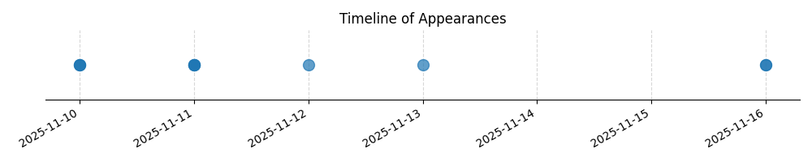

Kategorie: Letecké předpisy
Možnost A je správná, protože obecně platí zákaz shazování nebo rozprašování jakýchkoliv předmětů z letadla, pokud nejsou splněny specifické povolené podmínky (např. pro zemědělské postřiky, údržbu majáků, speciální povolení). Možnost B je nesprávná, protože omezení na dobu mezi východem a západem slunce není v tomto kontextu hlavním pravidlem. Možnost C je nesprávná, protože zákaz se týká jak shazování, tak rozprašování.

| Datum výskytu |
|---|
| 2025-11-16 |
| 2025-11-13 |
| 2025-11-12 |
| 2025-11-11 |
| 2025-11-10 |